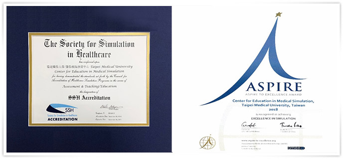
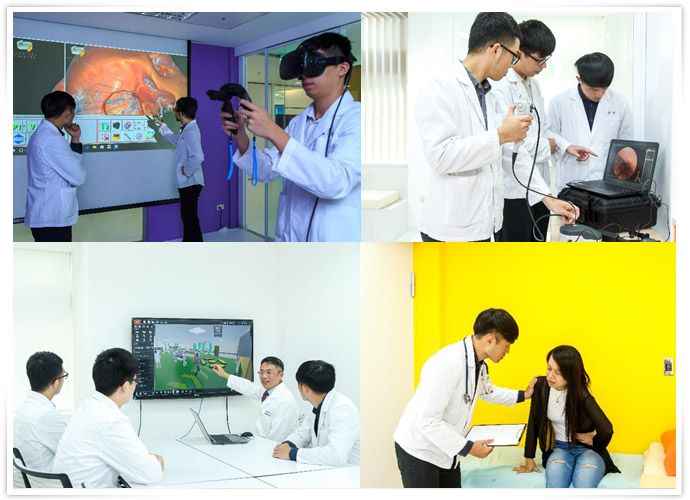
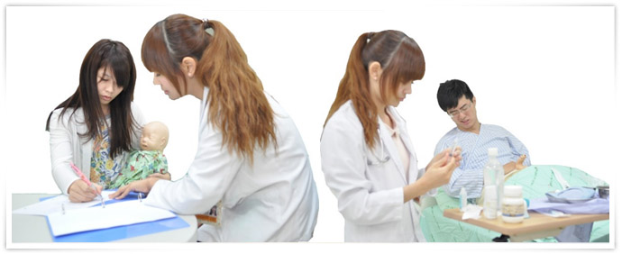

History & Mission
Center for Education in Medical Simulation Introduction

Center for Education in Medical Simulation (CEMS) is a university-level unit that aims to integrate teaching resources to develop simulation education. With the establishment of the center, we not only train students but also the medical and clinical staff members. We provide simulation training to students allowing them to demonstrate their abilities and verify the effectiveness of their actions, reducing the chances of medical malpractice and contributing to patent safety in the future. CEMS - Taipei Medical University (TMU) was initially part of the School of Medicine, but was promoted to a university-level center in 2013. CEMS is in charge of the promotion and planning of simulation education among 3 affiliated hospitals and 11 professional schools.
CEMS works in close partnership with the Winter Institute for Simulation, Education, and Research (WISER) with the guidance of its chief consultant: Dr. Paul Phrampus from the University of Pittsburgh. The center has used the Improving Simulation Instructional Methods (iSIM) course to train our faculty. The iSIM course has been successfully completed by more than 30 of our core teaching staff, some of them even earning advanced qualifications in teaching and managing iSIM courses. Our staff with qualifications to teach iSIM course have invited to offer training courses and run workshops with Dr. Phrampus in numerous hospitals and institutions in China.
There is a wide range of simulation training activities in CEMS, which are conducted by both simulation experts and clinical professionals. Since 2013, CEMS team has been invited to International Meeting on Simulation in Healthcare (IMSH) and The Association for Medical Education in Europe (AMEE) every year, in order to run workshops on innovations in simulation training.
CEMS is devoted to the development of medical simulation education, we aim to offer innovative and comprehensive courses for our learners to make the medical environment a safer place for our patients. We are the only institution in Taiwan which earned the qualification from Society for Simulation in Healthcare (SSH) on Assessment and Teaching /Education. In 2018, CEMS earned International Recognition of Excellent in Education (ASPIRE) on excellence in simulation awarded by the Association for Medical Education in Europe. These awards are evidence of CEMS commitment to the advancement of simulation-based education in Taiwan and internationally.

CEMS is dedicated to the development of simulation teaching staff. Through sharing experiences and a systematic approach towards developing training skills, we hope to build a highly effective team of faculty to promote simulation education. We also cooperate with the industry in developing innovative products, supporting the research and development of new medical equipment, by increasing the quality and effectiveness of the research in this field.

CEMS hosts cutting-edge teaching environments capable of simulating a wide range of clinical conditions and situations, contributing to student immersion in training scenarios to assess their clinical abilities. This is also of great benefit to the testing and the development of new healthcare devices.
Aside from providing simulation-based educational interventions, CEMS also aims to innovate the process and method of education itself. We are committed to improving the quality of simulation-based education and becoming global leaders in this field.

We hope to enhance the ability of our faculty in bridging the transfer of theoretical knowledge into clinical competency, as well as supporting our learners in their clinical development and teamwork skills to prepare them for the challenges of the future clinical environment.